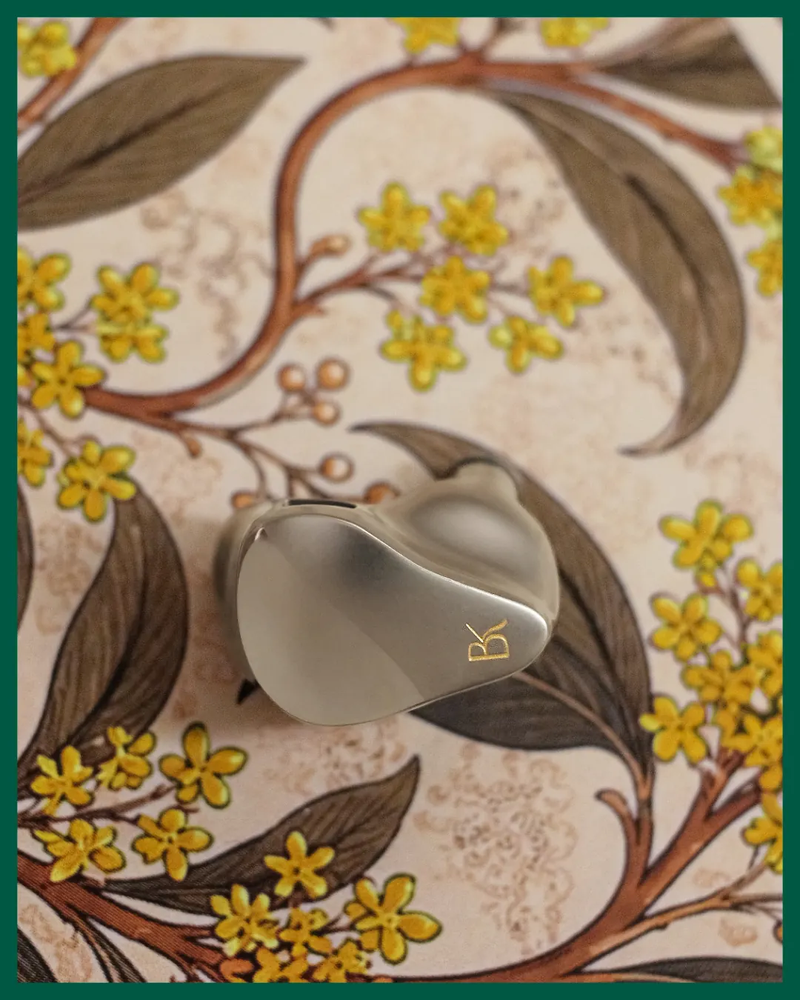
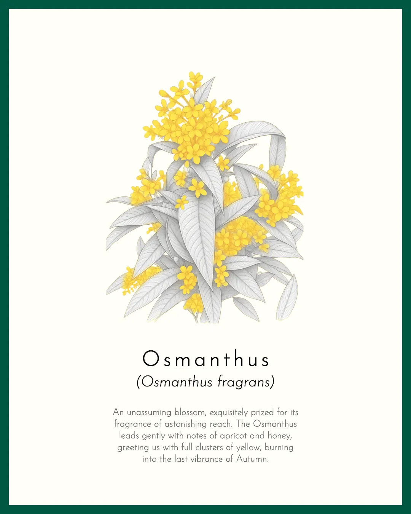
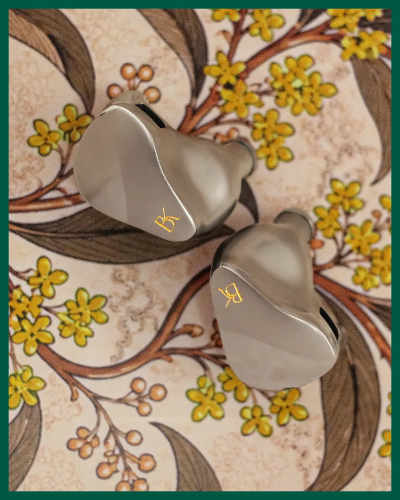
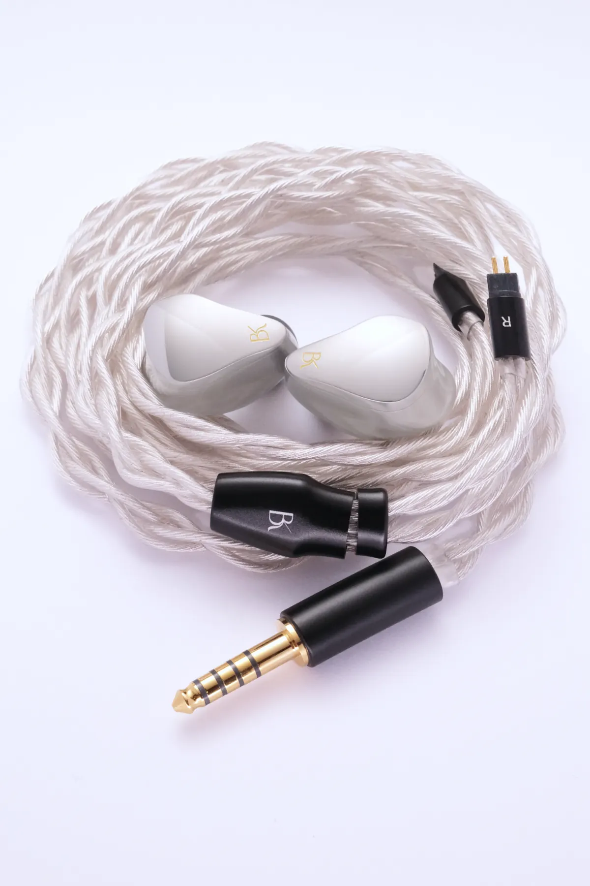
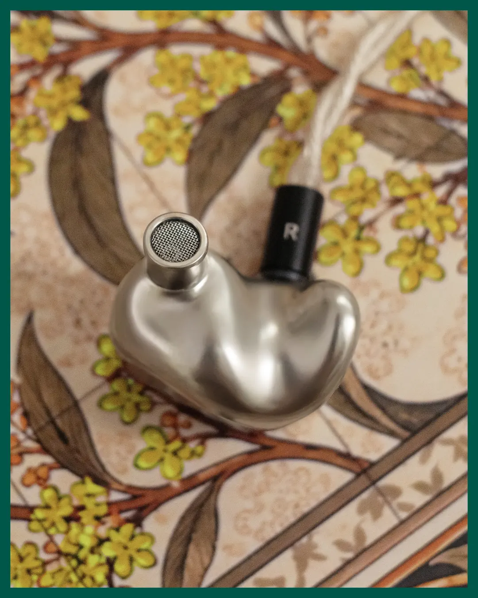
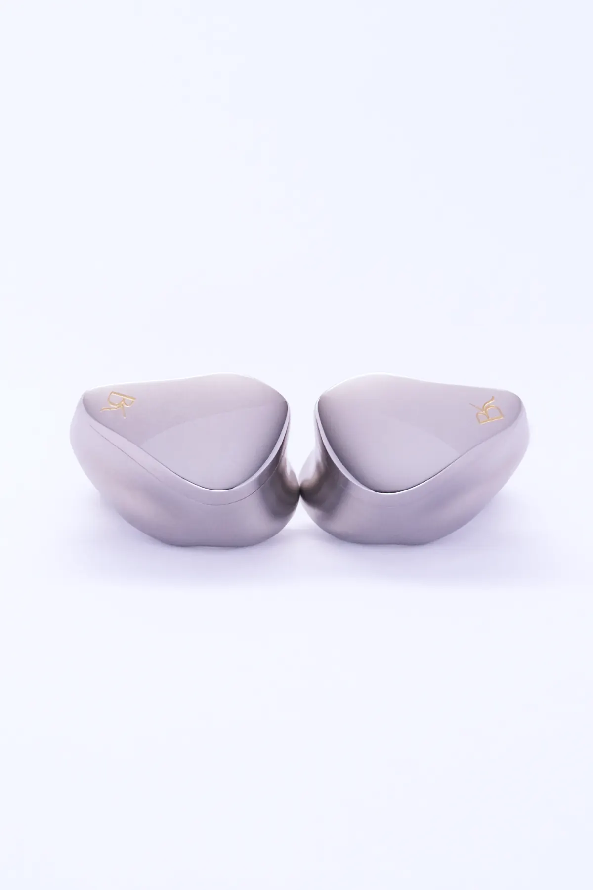
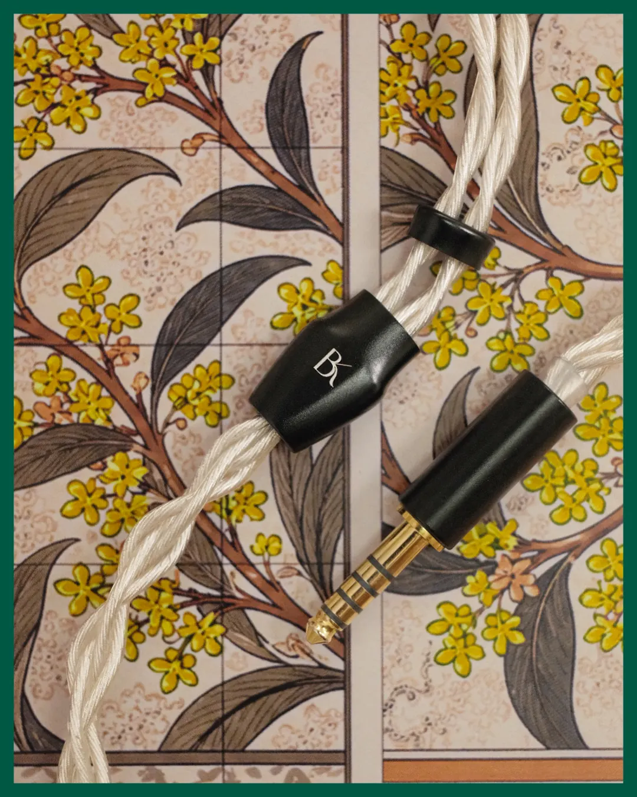

Two flowers, one debut.
Photography · Illustration cards · Backdrop concept
- The person
A Singapore founder launching his first luxury IEMs. Before shooting, I learned what inspired him and how he wanted people to feel.
- The idea
Each product given its own botanical setting: tile backdrops and hand-drawn illustration cards, Osmanthus for one, Lily of the Valley for the other.
- The work
Tile flat-lays for character, clean studio shots for detail. Nobody sees the hours of light, reshoots and cable-taming behind a frame, and that's the point.
Explore the photographsSwipe to explore →






